Sur Global, principio de todo.

Al pie del Fitz Roy, en el extremo norte del Parque Nacional Los Glaciares, El Chaltén es el pueblo más joven de Argentina y uno de los destinos de trekking más extraordinarios del planeta. No cobra entrada al parque. Los senderos son de acceso libre. El viento, la roca y los glaciares hacen el resto.
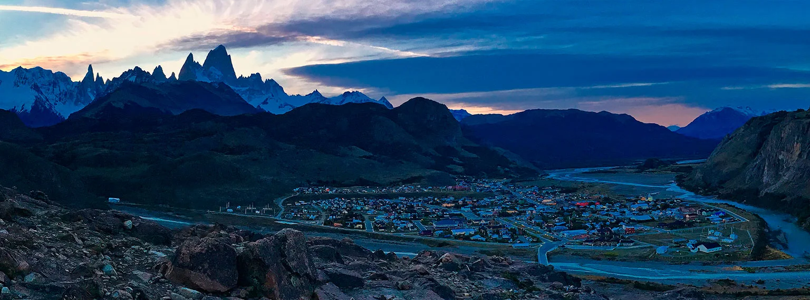
El Chaltén desde el mirador: el pueblo, el valle del Río de las Vueltas y el macizo del Fitz Roy cerrando el horizonte.
Los Aonikenk —también llamados tehuelches— recorrieron esta región por milenios. Cazadores de guanaco y nómadas de la estepa, conocían bien el macizo que domina el horizonte. Lo llamaban Chaltén: "montaña humeante", por las nubes que se forman casi permanentemente en su cima de granito y dan la impresión de una columna de vapor. En 1877, el explorador Francisco Perito Moreno llegó a estas tierras navegando los lagos Santa Cruz y Viedma. Bautizó la montaña en honor a Robert FitzRoy, el capitán del HMS Beagle —el mismo barco que llevó a Darwin por estas costas— sin saber que el nombre original aonikenk era infinitamente más poético.
En 1985, Argentina fundó El Chaltén en doce días. El contexto era el conflicto del Canal Beagle: Chile y Argentina disputaban soberanía sobre los canales australes y había riesgo real de guerra. El presidente Alfonsín ordenó la fundación de un pueblo en el extremo norte del Lago del Desierto —territorio reclamado por Chile— como gesto de presencia soberana. Se trajeron los primeros pobladores en aviones y helicópteros militares: jóvenes voluntarios, algunos sin más experiencia de montaña que la voluntad. El izamiento de la bandera, el 12 de octubre de 1985, fue el acto fundacional de la ciudad más nueva de Argentina. La disputa por el Lago del Desierto se resolvió recién en 1994, con un laudo arbitral que le dio a Argentina casi toda la zona reclamada.
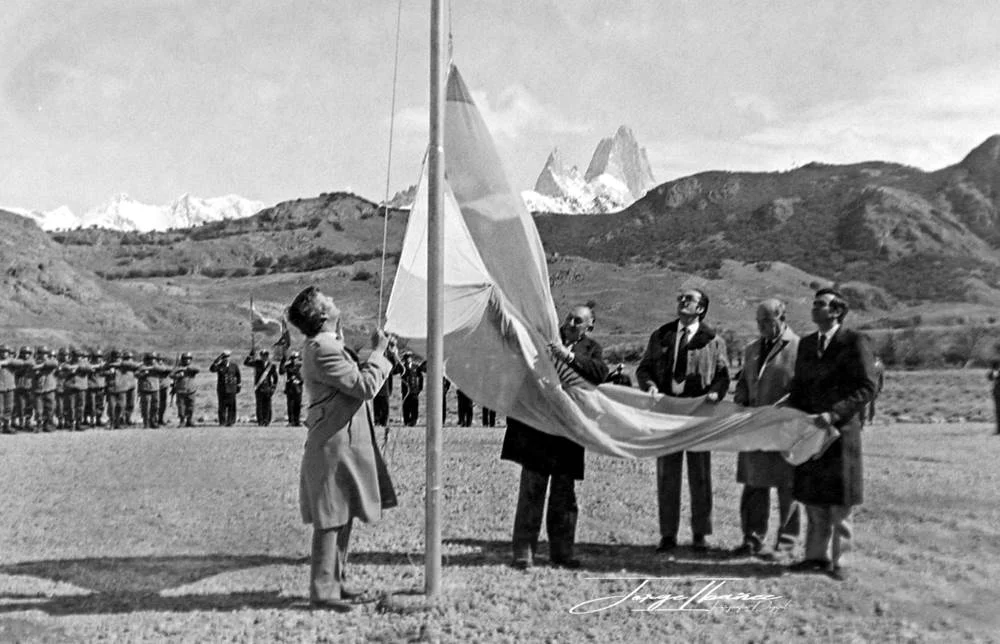
Fundación de El Chaltén, 12 de octubre de 1985. El Fitz Roy y el Cerro Torre al fondo. Foto: Jorge Horana.
La historia de la escalada en el Fitz Roy es tan épica como polémica. La primera ascensión llegó en 1952: los franceses Lionel Terray y Guido Magnone alcanzaron la cumbre del Fitz Roy tras semanas de intentos en condiciones extremas. Fue una de las hazañas del alpinismo del siglo XX. El Cerro Torre, en cambio, desató una de las mayores controversias de la historia del deporte: en 1959, el italiano Cesare Maestri afirmó haber llegado a la cima junto a Toni Egger —quien murió en el descenso, llevándose consigo la única cámara con pruebas. La escalada jamás fue verificada. En 1970, Maestri regresó con un compresor de gasolina de 120 kilos y perforó la roca con cientos de tornillos para trazar su "ruta del compresor". El alpinismo mundial tomó partido. En 2012, los escaladores Colin Haley y Jason Kruk subieron el Torre y retiraron la mayoría de los tornillos de Maestri —uno de los gestos más divisivos del deporte en décadas. El debate sigue abierto.
Senderos abiertos, menos turistas que en pleno verano y el campo cubierto de flores silvestres. El momento ideal para quienes buscan el Chaltén sin multitudes.
Días larguísimos — el sol no cae hasta las 22:30 en enero. Alta frecuencia de transporte y todos los servicios activos. El pueblo se llena: reservar alojamiento con meses de anticipación.
Los bosques de lenga se incendian en rojo y naranja. Menos gente, igual de hermoso, y la luz de la tarde sobre el Fitz Roy es diferente. La temporada secreta del Chaltén.
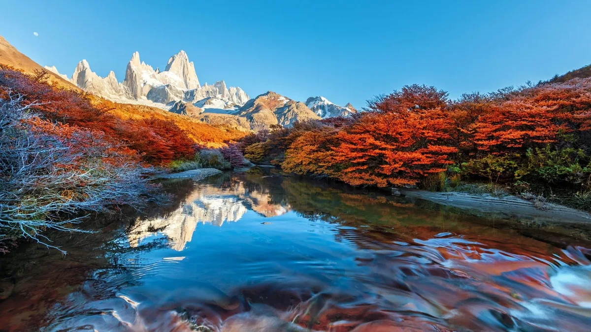
Marzo-abril: los bosques de lenga se incendian en rojo y el Fitz Roy se refleja en los arroyos. La temporada secreta del Chaltén.
El aeropuerto más cercano es el de El Calafate (FTE), con vuelos directos desde Buenos Aires, Ushuaia y Bariloche. Desde allí, 3 horas de bus por la Ruta 40 hasta El Chaltén. En temporada alta hay varias salidas diarias.
Las empresas Caltur y Chaltén Travel operan la ruta. El trayecto bordea el Lago del Desierto y el Lago Viedma con vistas a los glaciares —el viaje ya es parte de la experiencia. Sin aeropuerto propio en El Chaltén.
El Parque Nacional Los Glaciares no cobra entrada y sus senderos son completamente libres — sin permiso, sin guía obligatorio. Solo hay que registrarse en el Centro de Visitantes (a la entrada del pueblo) antes de salir. La señalización es buena en todos los senderos principales. Acá está el cuadro completo:
| Sendero | Distancia | Duración | Desnivel | Dificultad |
|---|---|---|---|---|
| Chorrillo del Salto | 7 km | 3 hs | Bajo | Fácil |
| Mirador del Torre | ~8 km | 3–4 hs | Bajo | Fácil |
| Laguna Capri | 8 km | 3–4 hs | Moderado | Fácil |
| Laguna Torre | 19 km | 7–8 hs | Moderado | Moderado |
| Laguna de los Tres | 25 km | 8–9 hs | 400 m (tramo final) | Moderado |
| Loma del Pliegue Tumbado | 21 km | 7–8 hs | 850 m | Moderado |
Senderos fáciles — ideal primer día o familias
El sendero más corto y accesible. Parte del final de la Av. San Martín compartiendo traza con la Laguna de los Tres antes de bifurcarse a la derecha. Atraviesa bosque nativo de ñire —con orquídeas magellánicas en temporada— hasta llegar a una cascada de más de 20 metros sobre el Arroyo del Salto. En inviernos extremos (bajo −20°C), la cascada congela por completo formando una pared de hielo. Ideal para el primer día, para aclimatarse o para ir con chicos.
Un balcón natural sobre el valle con vista directa al Cerro Torre, las Agujas Solo y el macizo del Fitz Roy. Sendero suave sin grandes desniveles, accesible para la mayoría. Se puede combinar con el inicio de la senda a Laguna Torre para quien quiera extender la caminata. Especialmente recomendable para el primer o último día en El Chaltén.
Una de las mejores relaciones esfuerzo-recompensa del parque. El sendero sube por la ladera con vistas al Río de las Vueltas y llega a la Laguna Capri —agua azul con el Fitz Roy de fondo—, uno de los paisajes más fotografiados de El Chaltén. Hay un campamento base en la laguna para quienes quieren amanecer con esa vista. A 40 minutos adicionales se llega al Mirador del Fitz Roy, con una perspectiva todavía más directa de la montaña. Se conecta con el sendero a la Laguna de los Tres.
Senderos moderados — día completo
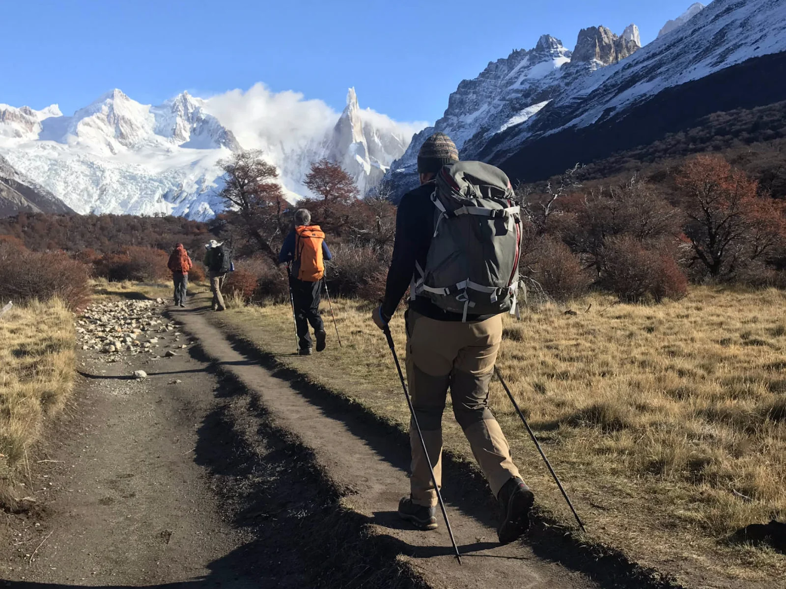
Uno de los grandes clásicos. El sendero recorre el valle del Río Fitz Roy siguiendo su curso hasta la fuente: la Laguna Torre, donde los témpanos desprendidos del Glaciar Grande flotan sobre el agua gris-turquesa. A los 15 minutos de salida aparece el Mirador de la Garganta, con una panorámica que ya vale el viaje. En el Campamento De Agostini —a 2 km de la laguna— se puede pernoctar con habilitación previa. Quien se quede a dormir puede hacer el Mirador Maestri al amanecer: 2 km adicionales sobre la cresta de la morrena con la mejor vista posible al Cerro Torre.
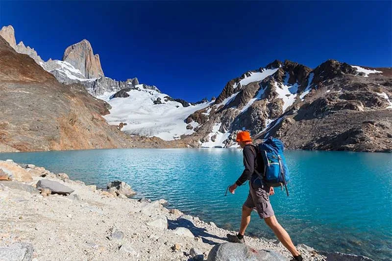
El sendero más famoso del Chaltén y uno de los más fotografiados del planeta. Los primeros tramos son suaves, atravesando bosque subandino con vistas al valle. La exigencia llega al final: 400 metros de desnivel en la última hora, por roca empinada hasta la laguna a 1.170 m s.n.m. La vista desde arriba —el Fitz Roy rodeado de glaciares colgantes con la laguna turquesa al pie— no tiene equivalente en la Patagonia. Salir antes de las 7 AM: la luz de la mañana tiñe el granito de rojo y naranja, y se llega al mirador antes de que el viento del mediodía dificulte la subida. A 15 minutos adicionales en bajada está la Laguna Sucia —color marrón-glaciar, rodeada de roca— que pocos visitantes conocen.
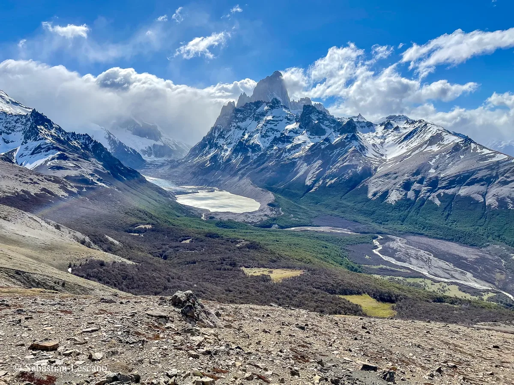
El sendero menos concurrido y el que ofrece la panorámica más completa de toda la región. A diferencia de los otros, este no baja a valles: sube sin pausa hasta la cresta. La primera hora lleva a la Pampa de las Carretas, con vista al Lago Viedma y la cadena andina. El camino continúa por bosque de lenga hasta los 1.000 m, donde la vegetación se abre en arbustos bajos y aparecen —extraordinario detalle— fósiles marinos de aproximadamente 100 millones de años en la roca. El tramo final son 280 m más de ascenso marcado con estacas amarillas hasta la cima. La recompensa: 360° de glaciares, el Campo de Hielo Sur, el Fitz Roy, el Cerro Torre, el Lago Viedma y el Lago del Desierto, todo simultáneo. Solo para caminadores con buen estado físico. Salir al amanecer.
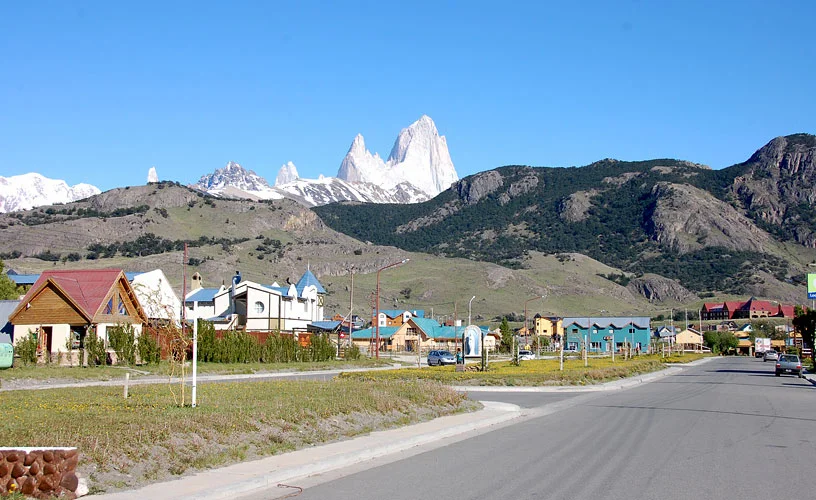
El Chaltén tiene apenas 2.000 habitantes permanentes y toda su infraestructura gira alrededor del trekking: alquiler de equipos, guías certificados, cervecerías artesanales y panaderías que abren a las 5 AM para los que salen temprano al Fitz Roy. La Calle Güemes concentra la mayoría de los locales. El Centro de Visitantes del Parque Nacional, a la entrada del pueblo, es el primer destino obligatorio: ahí se registran los senderos, se consulta el estado del tiempo y se consigue el mapa oficial. La entrada al parque es libre y gratuita.
El macizo del Chaltén es uno de los destinos de alpinismo más exigentes y codiciados del planeta. Sus paredes de granito patagónico —compacto, vertical, expuesto a vientos de hasta 150 km/h— concentran algunas de las rutas más difíciles que existen. Cada año, escaladores de élite de todo el mundo vienen a intentar sus cimas. Muchos vuelven sin alcanzarlas.
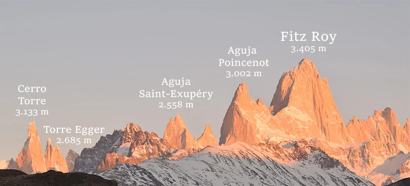
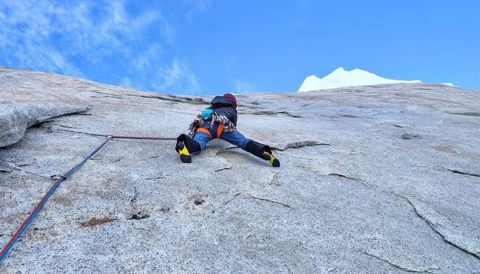
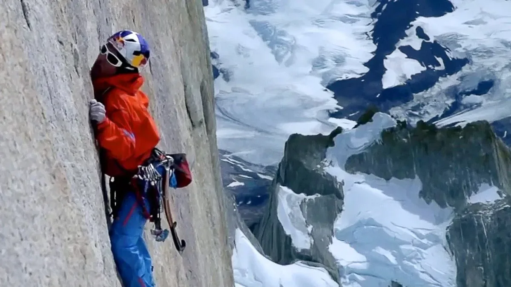
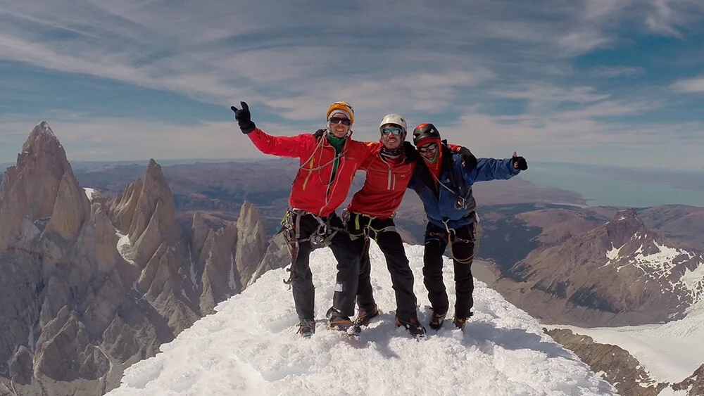
La cima del Cerro Torre: el Fitz Roy y las Agujas al fondo, el Lago Argentino en la distancia. Una de las vistas más extraordinarias del planeta.
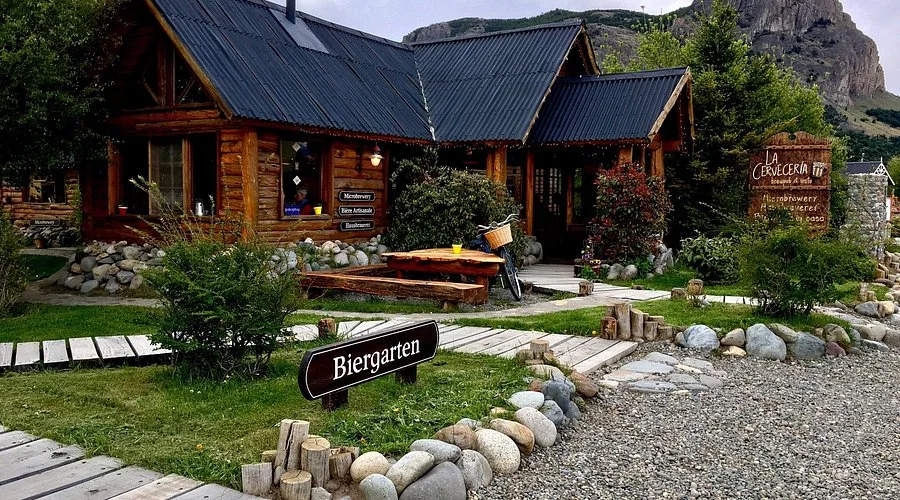
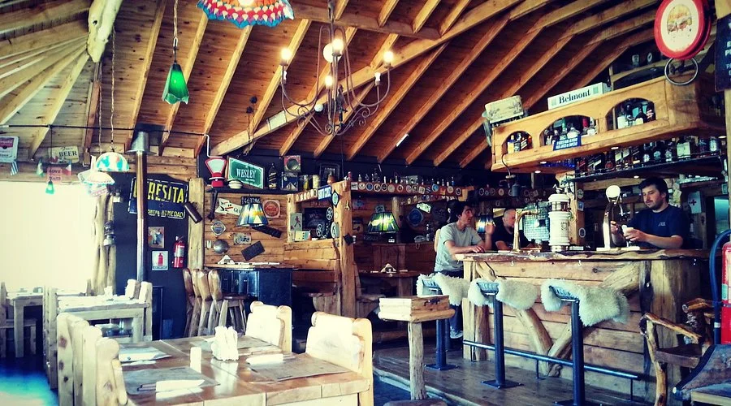
La más famosa del pueblo. Cerveza artesanal propia —rubia, roja, negra— y cocina de montaña: hamburguesas, pastas, tabla de fiambres. El lugar perfecto para la vuelta del sendero. Biergarten con vista al macizo.
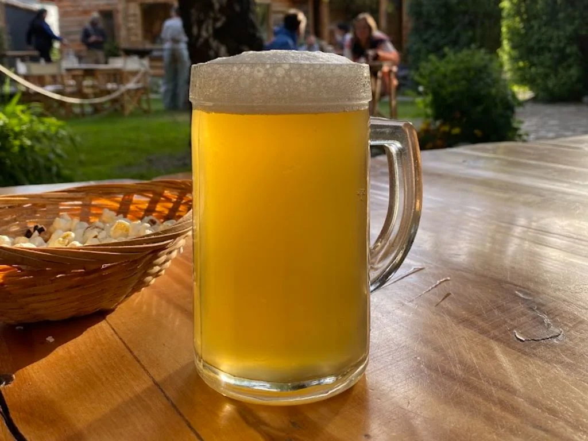
Segunda opción artesanal con su propia línea de cervezas y un patio al aire libre. Más tranquila que La Cervecería, con mesas largas para compartir y pizzas de masa gruesa al horno de piedra.
La propuesta más cuidada del pueblo. Cocina de autor con producto patagónico: trucha del Lago del Desierto, cordero braseado, hongos silvestres. Carta corta que cambia según la temporada. Reservar.
Parrilla clásica con vista al río. Cordero al asador, costillar y cortes de vacuno. Ambiente de estancia patagónica, porciones generosas y el humo de la leña desde la calle anuncia dónde está.
Abre a las 5 AM para los que salen temprano al Fitz Roy. Pan artesanal, medialunas, empanadas de cordero y café. La cola es parte del ritual: turistas de todo el mundo con mochilas, mapas y botas esperando su turno. Llevar efectivo — no aceptan tarjeta. El alfajor de dulce de leche de producción propia es para llevar de vuelta.